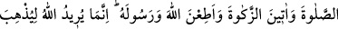
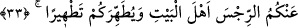

“Eğer” Allâh’ın
hükmüne
ve
Rasûlü’nün
rızâsına
muhâlefet
etmekten
“korkuyorsanız” insanlarla muhatap olduğunuzda, yabancı erkeklerle konuşurken
erkeklere ümid veren kadınların konuştuğu gibi yumuşak ve “çekici bir edâ ile
konuşmayın;”
“Eğer (Allah’tan) korkuyorsanız” cümlesi, başlangıç cümlesidir. Önceki cümlede
söz tamam olmaktadır. Ya da “Eğer (Allah’tan) korkuyorsanız” ifâdesi, Hz. Peygamber
(s.a.)’in hanımlarının hayırlı olmalarının şartı ve onların fazîletinin Hz. Peygamber
(s.a.) ile irtibatlarından değil, ancak takvâ ile olduğunun beyânı olması da muhtemeldir.
Zühd ve takvâ fazîlete mihrâb oldu.
Kadınlar yabancı erkeklerle konuşurken onların ümidlerini kırmak için vakur/sert
olmaya çağrılmaktadır. Bir kişi, evde olmayan başka bir insanın kapısına geldiğinde
içerdeki hanımın o kişiyle yumuşak ve çekici tarzda konuşması câiz olmaz. Çünkü bu
durum şehveti harekete geçirir ve erkeğin tamaha düşmesini doğurur.
“Sonra kalbinde hastalık” günah sevgisi “bulunan kimse ümide kapılır.” Töhmetten
ve muhatabın gönlüne ümid vermekten uzak, ciddî, vakur ve muhannesler gibi
kırıtmaksızın “Güzel söz söyleyin.”
Bedenî hastalık zâhirî ve maddî ölüm sebebi olduğu gibi zinâ da manevî helak ve
ölüm sebeplerindendir. Onun sebebi ise mülayim ve yumuşak davranmaktır.
Samurun, (kürkünün) yumuşaklığı sebebiyle canı âfettedir,
Kirpi ise sertliği sebebiyle canını kurtarır.
Âyette işâret edilmektedir ki kalblerin rahimlerini meşâyıhın velâyetinin tasarruflarına
teslim eden gönül ehlinin halleri, diğer insanların halleri gibi değildir. Allah ile O’nun
dışındaki şeylerden sakınıp takvâ sâhibi olan kimse, iki dünyâdan hiç bir şeye boyun
eğmez. Çünkü sözle boyun eğmek, kalp ve amel ile boyun eğmeyi getirir. Sâdıklardan
bir çoğu, kendi iddiâlarınca âhiretin salâhı ve dînin maslahatları için sözle dünyâ
erbâbına ve dünyevî işlere boyun eğerler. Böylece onlar yavaş yavaş helâk uçurumuna
yuvarlanır, gerisin geri dünyâya dönerler ve halleri de zayıf olduğu için gaflet
denizlerinde boğulurlar. O halde bu gibi ruhsat ve tavizlerden uzak durmalıdır. Ma‘rûf
ve iyilik dışında hiç bir gerekçeyle dünyâ hallerine ve dünyâ işlerine girişmemelidir.
Aksi halde kişi münker işlere mağlup olur. Hakk’ın rızâsına muhâlif işlerden Allâh’a
sığınırız.
33. Evlerinizde oturun, eski cahiliye âdetinde olduğu gibi açılıp saçılmayın.